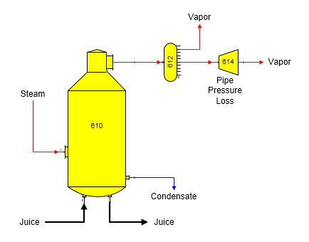
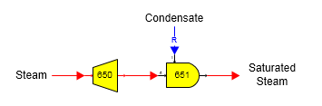

A pressure reducing station is used in the flow diagram below to allow for pipeline pressure loss in the vapor from an evaporator station. Simply specify a pressure drop for the vapor flow going through the pressure reducer station (no. 614). Sugars will calculate the corresponding change in temperature for the vapor and any change in water/vapor flow stream components if the vapor had any entrained liquid in the vapor.

The model of a pressure reducer with desuperheating station can be built using a pressure reducer and a blender station (see flow diagram below). The steam flow pressure is reduced in the pressure reducing station no. 650 and the blender station no. 651 is used to mix condensate with the superheated steam until the temperature of the steam is a saturation temperature for the new reduced pressure. The output saturation temperature is specified in the blender station and the quantity of the condensate is calculated by Sugars (condensate is a required flow).
